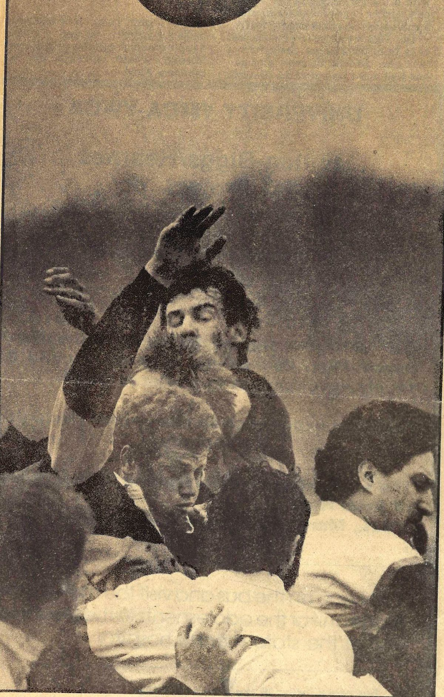
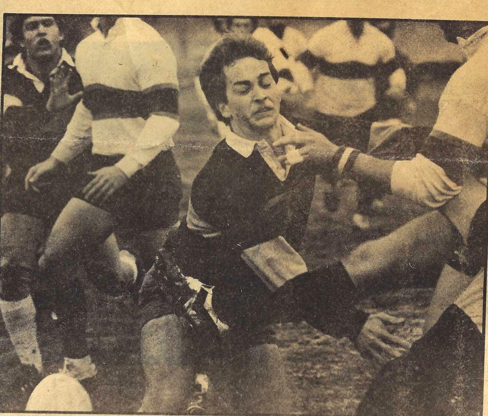
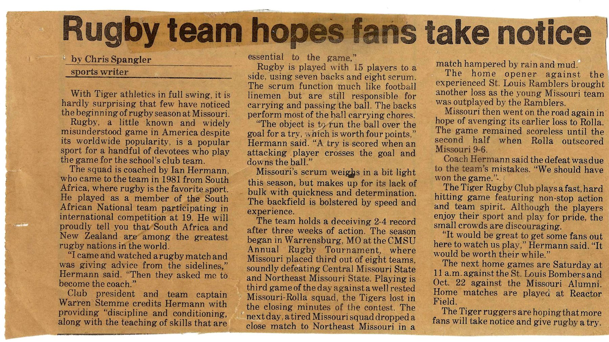
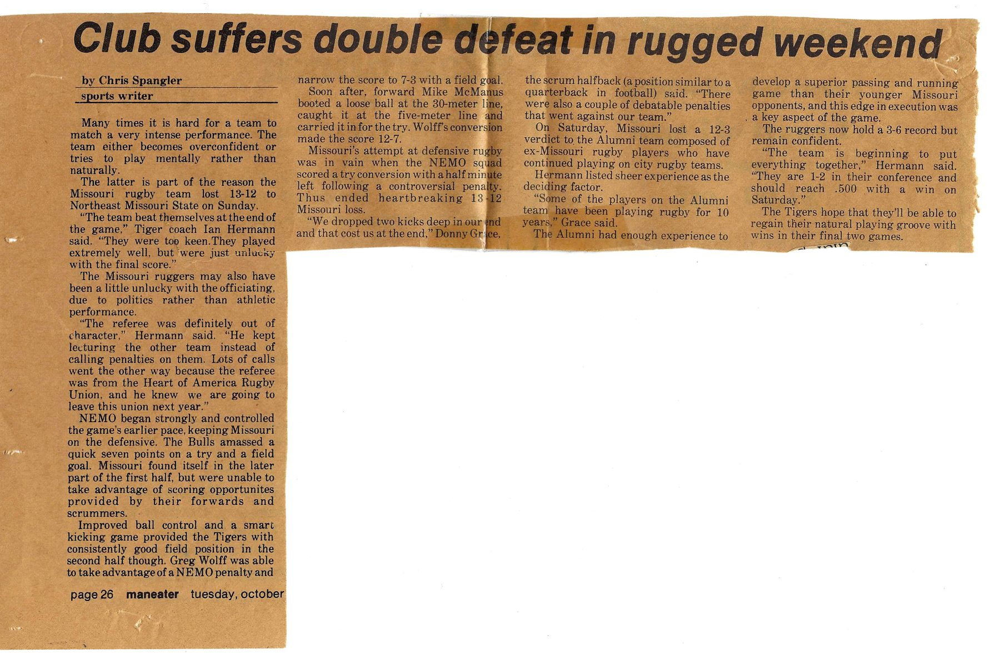
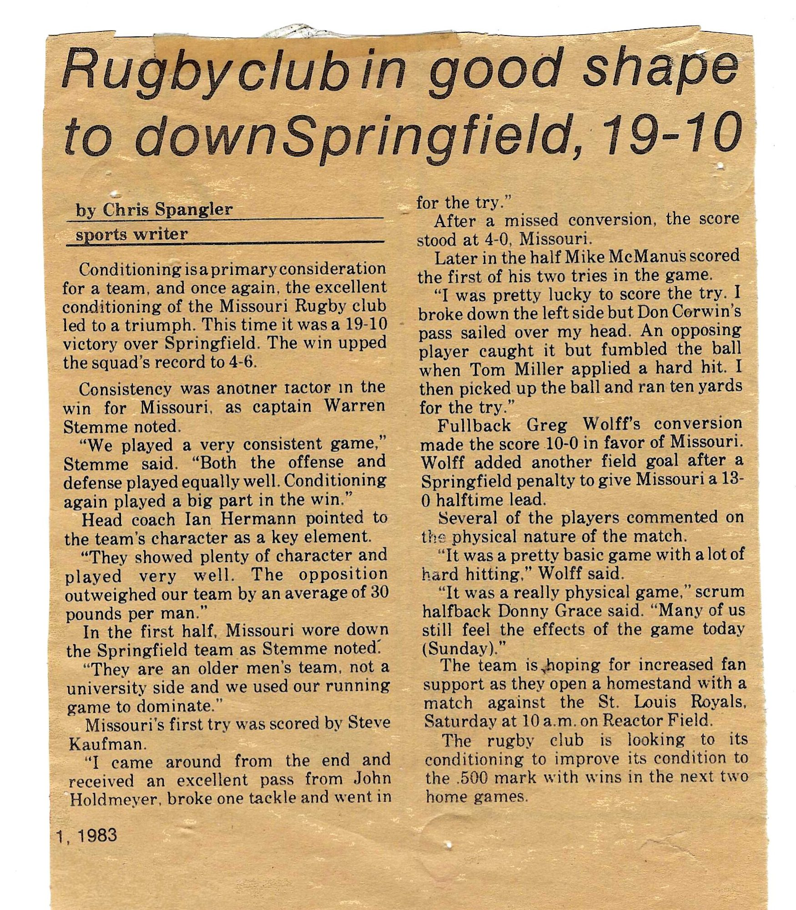
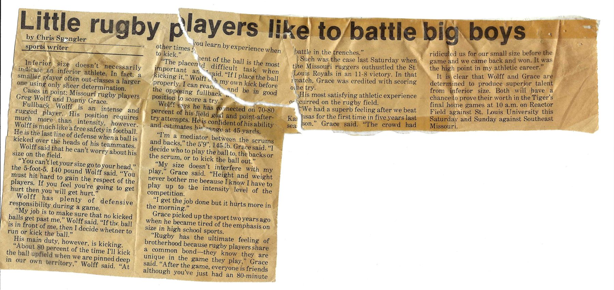
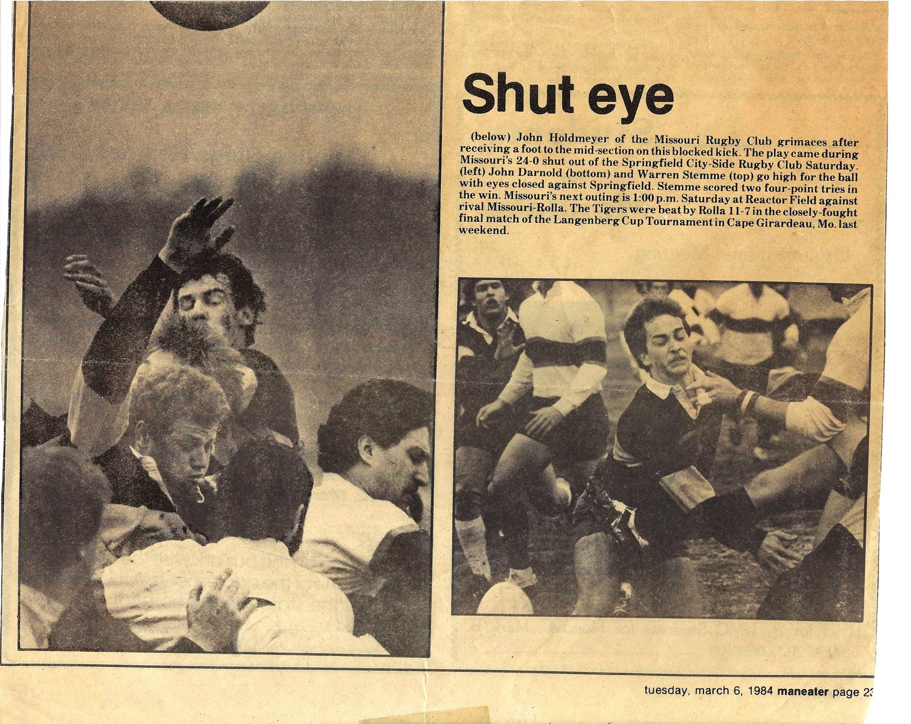

Mizzou Rugby Season Archive
Fall 1983: 5–6 through November 5, full record unknown · 1–2 in conference · Third at the CMSU Tournament · Langenberg Cup runners-up, spring 1984
A young side, an outsized fixture list, and a fall that turned around in November.
The club went into the fall of 1983 coached by Ian Hermann, who had come to Missouri in 1981 from South Africa, where he had played for the South African national team in international competition at nineteen. He had found the club by accident. “I came and watched a rugby match and was giving advice from the sidelines,” Hermann told The Maneater. “Then they asked me to become the coach.” Warren Stemme, who served as both club president and team captain that year, credited him with discipline, conditioning and the teaching of skills. The scrum was light for the company it was keeping, and the side leaned instead on quickness and on a backfield bolstered by speed and experience.
The season opened at the CMSU Annual Rugby Tournament in Warrensburg, where Missouri finished third out of eight teams, beating Central Missouri State and Northeast Missouri State before losing to a well-rested Missouri–Rolla side in the closing minutes of its third match of the day. A tired squad dropped a close one to Northeast Missouri in rain and mud the next day. The home opener brought a loss to the experienced St. Louis Ramblers, and a return trip to Rolla ended 9–6 to the Miners in a match that stayed scoreless until the second half. “The defeat was due to the team’s mistakes,” Hermann said. “We should have won the game.” That left the Tigers at 2–4.
The last weekend of October was the hardest of the year. On the Saturday, Missouri lost 12–3 to a Missouri Alumni side made up of former Tigers still turning out for city clubs, some of them with ten years of rugby behind them; Hermann put the result down to sheer experience. On the Sunday came a 13–12 defeat to Northeast Missouri State that he called heartbreaking. The Bulls took a quick 7–0 lead; Greg Wolff’s field goal off a NEMO penalty narrowed it to 7–3; then forward Mike McManus booted a loose ball at the 30-metre line, gathered it at the five and carried it in, and Wolff’s conversion made it 12–7. NEMO scored a converted try with half a minute left, following a penalty the Tigers disputed. “We dropped two kicks deep in our end and that cost us at the end,” scrum half Donny Grace said. Hermann was blunter about the officiating, and said the club would be leaving the Heart of America Rugby Union the following year.
Then the fall turned. Missouri beat Springfield 19–10 behind a 13–0 halftime lead: Steve Kaufman opened the scoring off a pass from John Holdmeyer, and McManus scored twice, the first of them after Tom Miller’s hit jarred the ball loose. Wolff added a conversion and a penalty kick. “We played a very consistent game,” Stemme said. “Both the offense and defense played equally well. Conditioning again played a big part in the win.” Hermann noted that the opposition had outweighed his team by an average of thirty pounds a man. A week later the Tigers outhustled the St. Louis Royals 11–8 at Reactor Field, with Grace credited with a try, to reach 5–6 with two home games left. No record of those last two fixtures — St. Louis University and Southeast Missouri, on the weekend of November 12 — has reached us.
In the spring the club went to the Langenberg Cup Tournament in Cape Girardeau and reached the final, where Missouri–Rolla beat them 11–7 in a close one. The Maneater’s picture page from the same week also records a 24–0 shutout of the Springfield City-Side club, in which Stemme scored two four-point tries. A rematch with Rolla was set for Reactor Field on March 10.


| Date | Result | Opponent |
|---|---|---|
| Fall 1983 | W | Central Missouri State · CMSU Tournament, Warrensburg |
| Fall 1983 | W | Northeast Missouri State · CMSU Tournament |
| Fall 1983 | L | Missouri–Rolla · CMSU Tournament, third match of the day |
| Fall 1983 | L | Northeast Missouri State · Warrensburg, the following day |
| Fall 1983 | L | St. Louis Ramblers · home opener, Reactor Field |
| Fall 1983 | L 9–6 | at Missouri–Rolla |
| Oct 15, 1983 | W | St. Louis Bombers · Reactor Field — score not printed |
| Oct 22, 1983 | L 12–3 | Missouri Alumni · Reactor Field |
| Oct 23, 1983 | L 13–12 | Northeast Missouri State |
| Oct 29, 1983 | W 19–10 | Springfield |
| Nov 5, 1983 | W 11–8 | St. Louis Royals · Reactor Field |
| Nov 12, 1983 | Not recorded | St. Louis University · Reactor Field |
| Nov 13, 1983 | Not recorded | Southeast Missouri · Reactor Field |
| Early Mar 1984 | W 24–0 | Springfield City-Side |
| Early Mar 1984 | L 11–7 | Missouri–Rolla · Langenberg Cup final, Cape Girardeau |
| Mar 10, 1984 | Not recorded | Missouri–Rolla · Reactor Field |
Results reconstructed from five Maneater clippings sent in by alumni, all written by sports writer Chris Spangler. Match dates come from the paper’s Tuesday publication dates and the fixtures it previewed, so the weekend is firm even where the exact day is not. The St. Louis Bombers result is the one inference here: the paper printed a 2–4 record before that match and 3–6 after the following weekend’s two defeats, so the Bombers game was a win, but no score was published. The March 1984 picture page reports the 24–0 Springfield City-Side win and the 11–7 Langenberg Cup final together without making clear whether the two belonged to the same tournament weekend.
Players who have told us they wore the Black and Gold this season, plus the names printed in The Maneater.
| Name |
|---|
| Jeremy Barnes |
| Dennis Benassi |
| Don Corwin |
| John Darnold |
| Donny Grace (Scrum Half) |
| John Holdmeyer |
| Steve Kaufmann |
| Nicholas "Nick" Klaus |
| Doug Littlefield |
| Michael McManus |
| Tom Miller |
| Joe Rusch |
| Warren Stemme (President, Captain) |
| Greg Wolff (Fullback) |
| Alistair Young |
Coached by Ian Hermann. This roster comes from alumni submissions and the 1983–84 Maneater coverage, and is not yet complete. One name to settle: The Maneater spelled the try-scorer against Springfield “Steve Kaufman”, while alumni submissions gave us “Kaufmann” — we have kept the alumni spelling here pending a decision. Missing a teammate? Use the form below.
“I came and watched a rugby match and was giving advice from the sidelines. Then they asked me to become the coach.”
Coach Ian Hermann on how he found Mizzou Rugby, The Maneater, October 1983
“They showed plenty of character and played very well. The opposition outweighed our team by an average of 30 pounds per man.”
Hermann after the 19–10 win over Springfield, The Maneater, November 1, 1983
“I was pretty lucky to score the try. I broke down the left side but Don Corwin’s pass sailed over my head. An opposing player caught it but fumbled the ball when Tom Miller applied a hard hit. I then picked up the ball and ran ten yards for the try.”
Mike McManus on the first of his two tries against Springfield, The Maneater, November 1, 1983
“You can’t let your size go to your head. You must hit hard to gain the respect of the players. If you feel you’re going to get hurt then you will get hurt.”
Fullback Greg Wolff — 5-foot-5, 140 pounds, and the club’s kicker out to about 45 yards, The Maneater, November 8, 1983
“Rugby has the ultimate feeling of brotherhood because rugby players share a common bond — they know they are unique in the game they play. After the game, everyone is friends although you’ve just had an 80-minute battle in the trenches.”
Scrum half Donny Grace, 5’9” and 145 pounds, who took up the game in 1981 after tiring of the emphasis on size in high school sport, The Maneater, November 8, 1983
Have a story from this season? Share it below.
Five Maneater clippings from the 1983–84 season, all by sports writer Chris Spangler, scanned from an alumnus’s scrapbook.





All five clippings from The Maneater, the University of Missouri student newspaper, 1983–84, sent to the Alumni Association by an alumnus. Have more of this scrapbook? The form below is the quickest way to get it to us.
Roster info, season records, photos, stories — every detail helps.